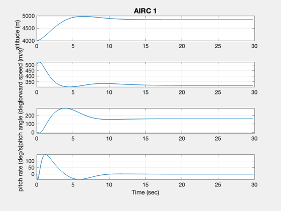
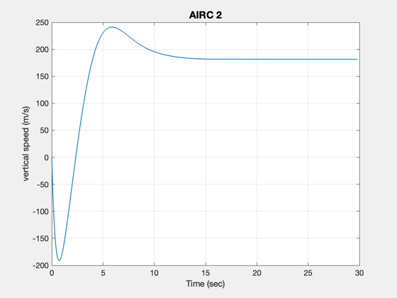
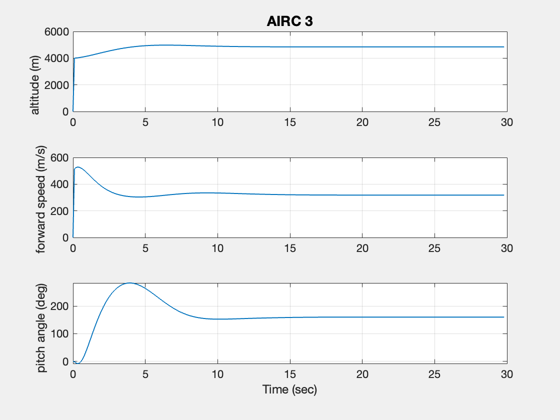
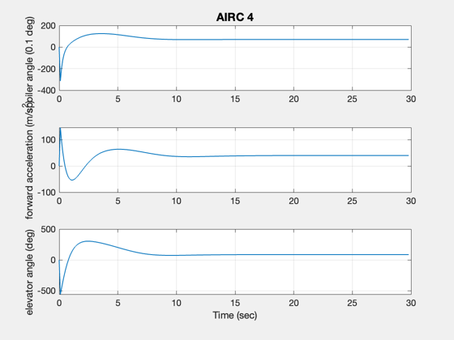

Longitudinal simulation using the AIRC aircraft model.
------------------------------------------------------------------------ See also StateSpacePlot, AIRC, CToD, LQC, PropStateSpace ------------------------------------------------------------------------
Contents
%--------------------------------------------------------------------------- % Copyright 1999 Princeton Satellite Systems, Inc. % All rights reserved. %---------------------------------------------------------------------------
Get the AIRC model
%------------------- g = AIRC; disp('The input vector') get( g, 'inputs' ) disp('The output vector') get( g, 'outputs' ) disp('The state vector') get( g, 'states' )
The input vector
ans =
3×28 char array
'spoiler angle (0.1 deg) '
'forward acceleration (m/s^2)'
'elevator angle (deg) '
The output vector
ans =
3×20 char array
'altitude (m) '
'forward speed (m/s) '
'pitch angle (deg) '
The state vector
ans =
5×20 char array
'altitude (m) '
'forward speed (m/s) '
'pitch angle (deg) '
'pitch rate (deg/s) '
'vertical speed (m/s)'
Time setup
%------------
tEnd = 30;
dT = 0.1;
nSim = tEnd/dT;
Design a linear quadratic controller
%------------------------------------- w = []; w.q = eye( get(g,'n') ); w.r = eye( get(g,'nI') ); w.qE = eye( get(g,'n') )/10; w.rE = eye( get(g,'nO') ); gC = LQC( g, w, 'lqg' );
Closed loop eigenvalues
ans =
0 + 0i
-0.4712 + 0.9458i
-0.4712 - 0.9458i
-0.017798 + 0.21302i
-0.017798 - 0.21302i
-4.4706 + 0i
-1.1329 + 1.0025i
-1.1329 - 1.0025i
-1.5455 + 0.088722i
-1.5455 - 0.088722i
Convert to discrete time
%------------------------- g = CToD( g, dT, 'z' ); gC = CToD( gC, dT, 'z' );
Preallocate memory
%-------------------
Initialize the plotting
%------------------------ plots = struct('x','all','u','all','y','all','g',g); d = StateSpacePlot( 'init', plots, 400, nSim );
Initialize u and y
%------------------- u = zeros( get(g, 'nI'), 1 ); y = zeros( get(g, 'nO'), 1 );
Initially at 4000 m altitude and 500 m/sec forward velocity
%------------------------------------------------------------
x = [4000;500;0;0;0];
Initialize the controller
%------------------------- xC = zeros(get(gC,'n'),1); yC = x(1:3); for k = 2:nSim % Plotting %--------- d = StateSpacePlot( 'store', x, y, u, d ); % Your controller here: u = f(y) %------------------------------- [xC, u] = PropStateSpace( gC, xC, y - yC ); % The linear simulation %---------------------- [x, y] = PropStateSpace( g, x, u ); end StateSpacePlot( 'plot', d ) %-------------------------------------- % $Id: f4446804dd67ff2ff362d239cd4a29683fc18bbf $   